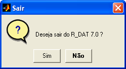

| Menu Arquivo |
|
Sair
do R_DAT
Para encerrar a
execução do R_DAT, clique em
“Arquivo ► Sair”.
Também é
possível usar as opções de fechamento de
janela do Windows (ícone ou botão
“fechar” na barra de título da janela)
Ao receber um
comando de fechamento, o R_DAT,
solicitará uma confirmação do usurário, para evitar fechamento
inadvertido.

Caso o arquivo
de trabalho atual tenha sofrido
alguma modificação, o R_DAT questionará se o usuário deseja salvar as
alterações:

- A opção
“Sim” sobrescreverá o arquivo com as modificações realizadas nas
matrizes de
trabalho e encerrará o R_DAT;
- A opção
“Não” descartará as matrizes de trabalho e encerrará o R_DAT;
- A opção
“Cancela” retornará ao R_DAT sem tomar nenhuma ação.
|
Nota: Certifique-se
de ter salvado o arquivo de trabalho antes de fechar o R_DAT. A opção
“Não” descartará as matrizes de trabalho atuais, que não poderão ser
recuperadas. |
| |
Carregar
arquivo recente |
Menu
Arquivo |
|